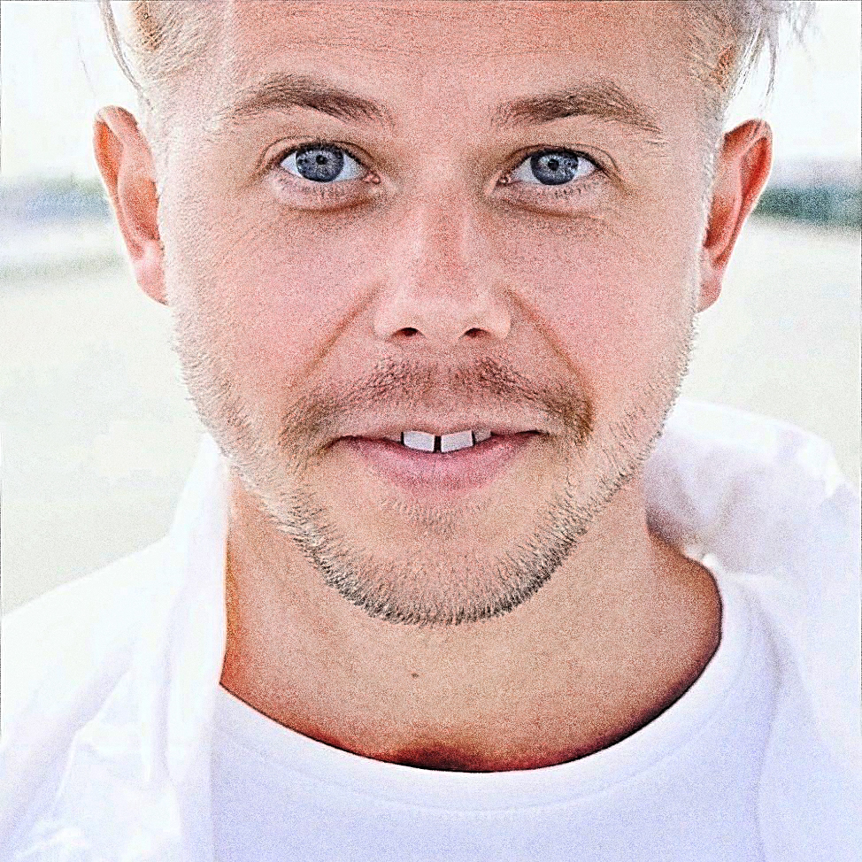

I turn complex business problems into campaigns, products, and AI-assisted workflows with visible outcomes—not decorative strategy decks.

AI system that removes repetitive compliance work
↓ 90%Entertainment creative built for franchise recognition
WinnerRelease-to-commerce workflow for a cult music catalog
10×Integrated digital campaign with measurable participation
200KAutomated training assignments instead of manually chasing documents and people.
Amazon Bedrock-powered compliance workflow with document processing, targeted assignments, dashboards, audit logs, and engagement features.
Five distinct visual directions designed to stop fans, not just decorate a wall.
Translated SCREAM’s visual legacy into recognizable, suspense-driven, digital-first campaign concepts for a Los Angeles exhibition.
A physical release built as one connected production, marketing, and sales workflow.
Mastering, artwork, prepress, production coordination, marketing strategy, Shopify operations, and fulfillment—one system.
A charity campaign where the digital journey was engineered to convert participation.
Owned digital across funnel, paid social, CRM, registration experience, and campaign storytelling.
A modular animated world that stretched one concept into a standout multi-video campaign.
Concept, slogan, storyboard, visual system, and animator workflow for Fanta Mandarin.
Human-rights storytelling delivered through sound instead of another panel discussion.
The first Belarusian-language DJ set as a socio-cultural narrative featuring artists in exile and opposing dictatorship.
Résumé and portfolio stay one tap away. The rest of the site proves why they are worth opening.